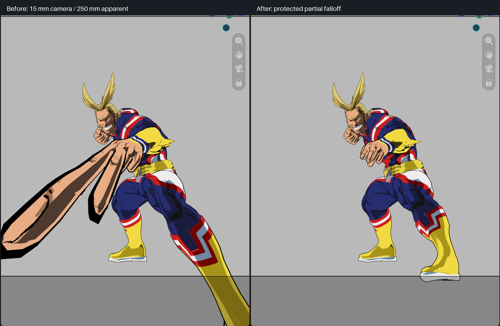

15 mm view → 250 mm apparent lens
Schema 26 fixes the native-perspective remainder in partial falloff. At high apparent focal lengths it now approaches a finite focus-plane projection. Full-strength optical behavior and the established deformation at/beyond the focus-depth boundary remain intact; ≤215 mm is unchanged.

The first candidate fixed the fingers but still enlarged the foot. The comparison shows the revised candidate, with both hand and foot compact. These are actual Metal captures, not generated artwork.
Validation
21 fixture runs passed across Blender 4.2.23, 4.3.2, 4.4.3, 4.5.15, 5.0.1, 5.1.2 and 5.2.2: partial-falloff depth/projection, clipping continuity and packaged-asset repair. The 5.2.2 baseline comparison also passed 42 unchanged-region checks.
Retained 32,001-point Geometry Nodes fixture: new medians 2.10/2.10 ms; baseline 2.16/2.59 ms. This shows no observed regression in this bounded run, not a whole-scene FPS claim. No subdivision, new reductions, GPU readbacks or per-frame Python geometry scans. Windows GPU replay remains pending.
The high-lens protection intentionally redistributes foreground partial-falloff geometry; it does not guarantee exact local volume there. View, lens and scene file were not reset or saved by automation. User edits after capture remain intact.
Results · Raw before · Raw after · Overview